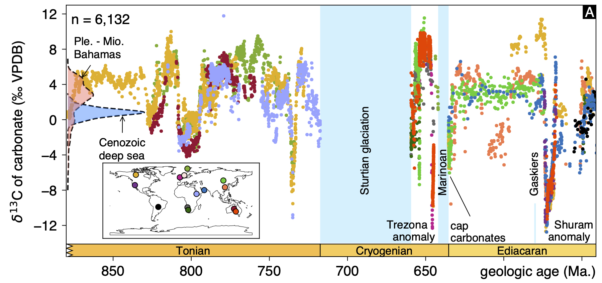
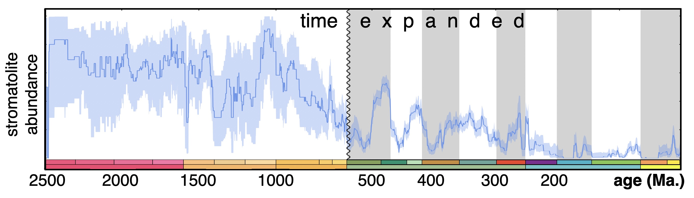

Global and local controls on carbonate geochemistry
The carbonate rock record forms a 3500 million-year-long history of the physical, biological and chemical conditions of marine environments. Deep-sea carbonates, composed of microfossils and deposited on oceanic crust, are available to study time periods <250 million years old (Ma.). Owing to plate tectonics, the only extant older carbonates were deposited in shallow water, formed on continental crust flooded with marine waters. This distinction is critical, because shallow marine waters can be only tenuously connected to the open ocean, meaning that their chemistry often diverges from the global ocean. For example, the carbon isotopic composition of dissolved inorganic carbon (δ13CDIC) in these settings can be very different from open ocean δ13CDIC, influenced by local processes such as river outflow, evaporation and high local rates of photosynthesis. Carbonate δ13C values (δ13Ccarb) are one of the most common measurements in Earth history research, used as proxies to study the global carbon cycle. However, this approach assumes that δ13Ccarb records the δ13CDIC of the global ocean. Extreme variability in δ13Ccarb in shallow-water carbonates broadly co-occur with momentous changes in Earth history, such as atmospheric oxygenation, biospheric change and climate upheavals (figure above, from: Ahm and Husson, 2022), leading to proposed roles for an anomalous global carbon cycle in these events. My group works to disentangle the local and global processes that control the geochemistry of ancient carbonates using fieldwork, multi-proxy datasets and modeling, on time periods throughout Earth history.
Quantifying the creation and destruction of the sedimentary rock record

The sedimentary rock reservoir both records and influences changes in Earth's surface environment.
Geoscientists extract data from the rock record to constrain long-term environmental, climatic and biological evolution (see above), with the understanding that geological processes of erosion and rock destruction may have overprinted some aspects of their results.
It has also long been recognized that changes in the mass and chemical
composition of buried sediments, operating in conjunction with biologically catalyzed reactions, exert a first-order control on Earth surface conditions on geologic timescales.
Thus, the construction and destruction of the rock record has the potential to influence both how Earth and life history are sampled, and drive long-term trends in surface conditions that otherwise are difficult to affect.
My group explores these connections through geological data synthesis using Macrostrat, a geospatial database that describes the age and properties of rocks in the upper crust.
The most basic calculation that can be derived from these resources is the quantification of rock abundance vs. rock age - for a given point in time at a given region in space, does rock exist?
In the movie on the left, this quantity is shown for North America sediments (1 billion years ago to present).
Does the rock record get worse with age, as is commonly thought?
How do records from one region of the globe compare to other regions?
How do such time series compare to other, significant events in Earth history, such as atmospheric oxygenation and biological evolution (e.g., Husson and Peters, 2017)?
Data-mining in Earth history research
As the number of geoscience papers grows exponentially, the ability to discover and analyze all data relevant to a given question has become unwieldy. This challenge (and opportunity) is the inspiration for GeoDeepDive, a digital library that supports machine learning and data mining efforts in the sciences. In one example of its scientific utlitiy, I used both GeoDeepDive and Macrostrat to constrain the prevalence of stromatolites, fossilized remnants of microbial communities in carbonate rocks, across geologic time. For this publication, I wrote code in Python to "read" 10,683 scientific papers, and extract geologic units (and their ages) that contain stromatolite fossils. The results are congruent with long-held qualitative ideas about the abundance of stromatolites across geologic time - mainly, a Proterozoic marine rock record dominated by stromatolites, followed by a precipitous decline as animals rise to dominate shallow shelf systems in the Phanerozoic (figure above, from: Peters, Husson and Wilcots, 2017). The notion, however, that stromatolite abundance resurges in the aftermath of metazoan mass extinctions finds no support in these results. Importantly, the approach I developed for this paper is general, and the code I wrote is easily adaptable for other, similar research questions involving the GeoDeepDive library.